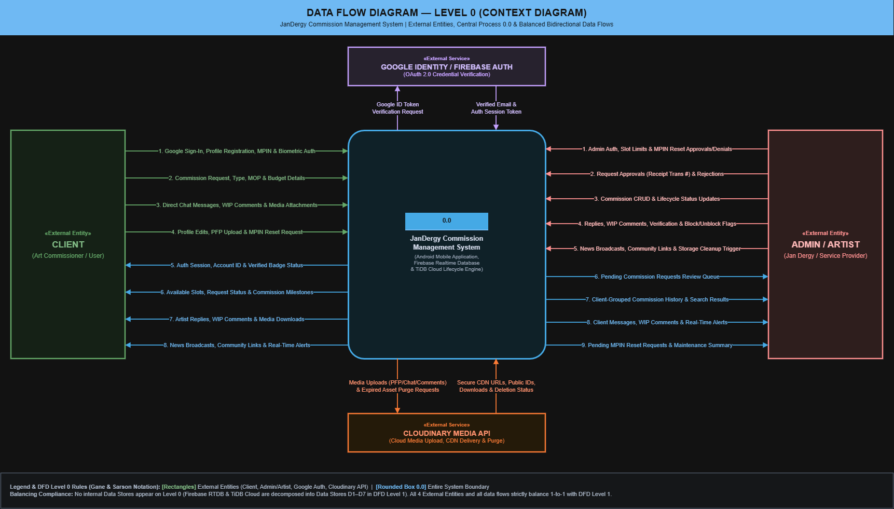
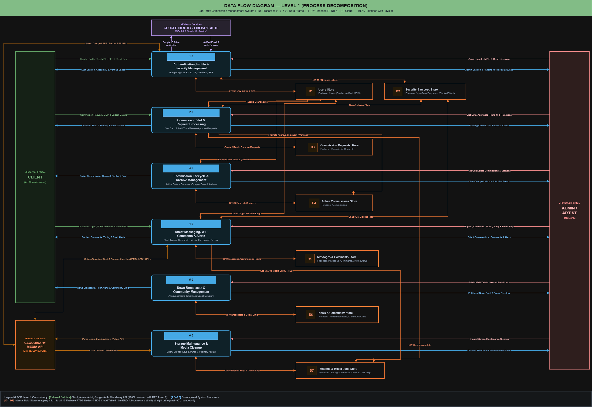
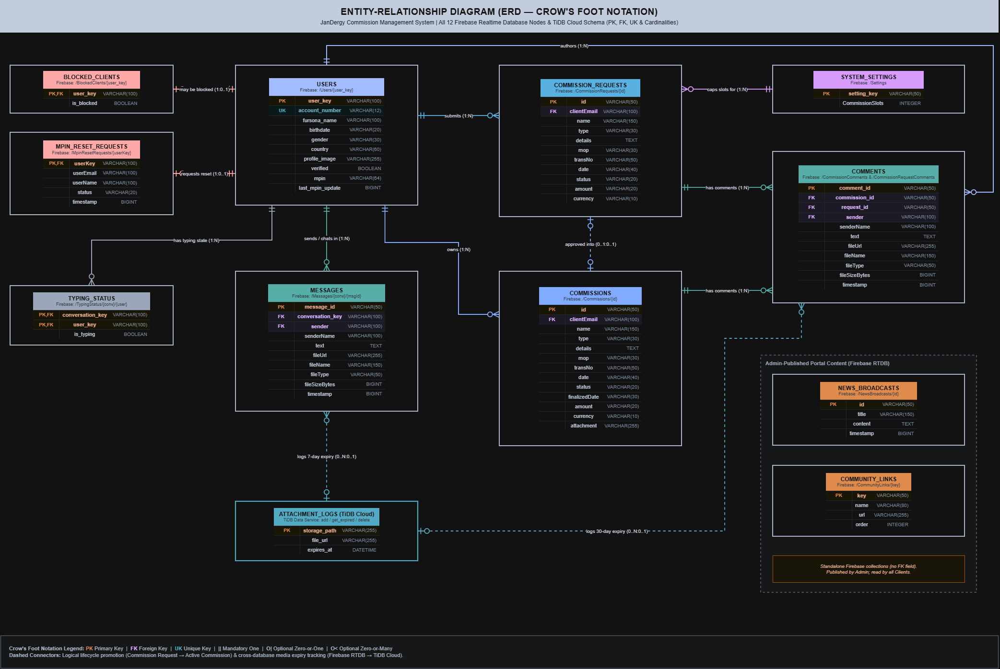
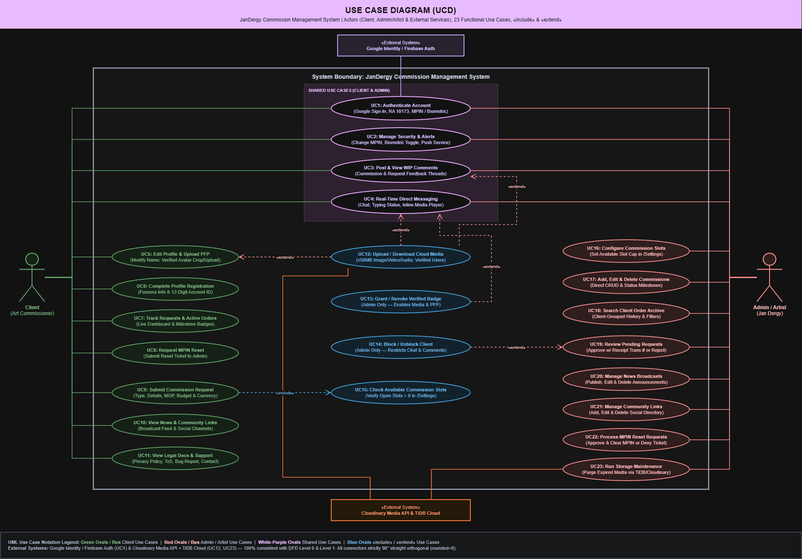
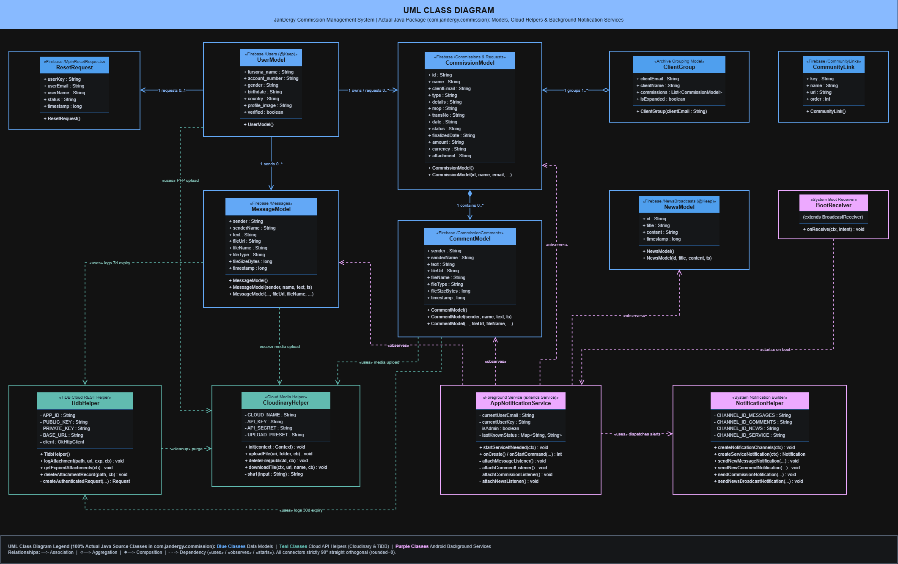

Commission Tracking System Portal Application
An Android Mobile Portal Application with Real-Time Order Tracking, Direct Client-Artist Messaging, and Automated Cloud Media Lifecycle Management
System Architecture & Modeling Diagrams
Click any diagram to inspect in Draw.io
Background of the Study
- Digital art commissioning involves multi-stage workflows including slot availability checks, order request intake, quotation and receipt verification, work-in-progress (WIP) feedback iterations, and final high-resolution asset delivery.
- However, independent digital artists and freelance service providers typically rely on fragmented third-party social platforms (scattered chat threads, manual spreadsheets, and unorganized cloud folders), resulting in lost commission requests, delayed status updates, lack of structured receipt verification, and rapid cloud storage exhaustion.
- Thus, there is an operational need for a centralized mobile commission management system that integrates real-time order tracking, direct client-artist communication, multi-layer security, and automated media storage lifecycle maintenance.
- This capstone project develops the Commission Tracking System Portal Application, an Android portal engineered with Firebase Realtime Database, Google OAuth 2.0, Cloudinary Media API, and TiDB Cloud to streamline end-to-end commission workflows between Clients and the Admin/Artist.
Statement of the Problem & System Objectives
How can commission intake, slot capacity, and order lifecycle tracking be centralized and automated?
- 1.1Configure real-time commission slot caps in
/Settings/CommissionSlotsso clients can only submit requests when slots are open; - 1.2Provide structured commission request submission capturing commission type, details, mode of payment (MOP), budget, and currency; and
- 1.3Enable Admin approval with receipt transaction numbers (
transNo) that promote pending requests into active commissions tracked across milestones and client-grouped archives.
How can client-artist communication, WIP feedback, and account security be reliably managed in real time?
- 2.1Implement Google Sign-In (OAuth 2.0) paired with Data Privacy Act (RA 10173) compliance, 4-digit MPIN & biometric authentication, and an Admin-managed MPIN reset ticket workflow;
- 2.2Provide real-time direct messaging with typing indicators, inline media playback, and dedicated WIP comment threads on both pending requests and active commissions; and
- 2.3Run a persistent Android foreground notification service (
AppNotificationService&BootReceiver) that dispatches instant push alerts for messages, comments, status updates, and news broadcasts.
How can cloud media storage be optimized without manual cleanup overhead?
- 3.1Restrict high-resolution media uploads (≤50MB image, video, and audio attachments) to verified users via Cloudinary CDN;
- 3.2Log media attachment expiration timestamps in TiDB Cloud (7-day expiry for direct chat media and 30-day expiry for WIP comment attachments); and
- 3.3Provide an Admin-triggered storage maintenance engine that queries expired keys from TiDB Cloud and automatically purges expired assets from Cloudinary.
Significance of the Study
Admin / Artist
Centralizes slot capping, request screening, receipt transaction logging, client-grouped archiving, news broadcasting, and one-tap storage cleanup.
Clients
Provides real-time visibility into open commission slots, pending request approvals, active milestone badges, direct chat, and WIP feedback threads.
Institution & BSIS
Demonstrates applied mobile software engineering, hybrid cloud databases (Firebase RTDB + TiDB Cloud), REST media APIs, and structured IS modeling at CFC.
Future Researchers
Serves as a reference architecture for building real-time freelance management systems with automated cloud asset expiration and mobile security.
Scope and Delimitations
Focus (Scope)
Covers Google OAuth 2.0 + MPIN/Biometric auth, 12-digit Account ID registration, commission slot capping, request review & promotion, active commission CRUD & archive grouping, real-time chat & WIP comment threads, news/community links, and TiDB + Cloudinary media purging.
Respondents & Period
Designed for digital art commissioners (Clients), the service provider/administrator (Jan Dergy), and BSIS technical evaluators at Cronasia Foundation College, Inc. during Academic Year 2026–2027.
Delimitation
Records payment methods (MOP), budget, currency, and official receipt transaction numbers (transNo) for verification, excluding direct in-app banking charges. Chat and comment media follow automated 7-day and 30-day retention policies.
Theoretical & Conceptual Framework
Theoretical Framework: IS Success & Workflow Automation Theory
Anchored on DeLone and McLean’s Information Systems Success Model, when a commission platform delivers high System Quality (real-time synchronization, hybrid cloud stability), Information Quality (accurate slot counts, verified receipt transaction tracking, live milestone statuses), and Service Quality (direct messaging, WIP feedback threads, foreground push alerts), users reciprocate with higher trust, faster feedback cycles, and streamlined service fulfillment.
- •Multi-Layer Auth (Google OAuth 2.0, RA 10173, MPIN & Biometrics)
- •Commission Slot Capping & Request Intake Engine
- •Real-Time Direct Messaging, WIP Comments & Push Service
- •Hybrid Cloud Persistence (Firebase RTDB, Cloudinary & TiDB Expiry)
- •Centralized Commission Lifecycle & Archive Management
- •Transparent Order Milestone & Receipt Verification
- •Responsive Client-Artist Collaboration & Notifications
- •Automated Cloud Media Storage Optimization
System Models & Architectural Diagrams
1. Data Flow Diagram — Level 0 (Context Diagram)
1. Open DFD Level 0 (Draw.io)Establishes the overall system boundary (Process 0.0: Commission Tracking System Portal Application) and its balanced bidirectional data flows with four external entities:
- CLIENT (Art Commissioner / User): Submits sign-in credentials, profile registration, MPIN/biometric auth, commission requests (type, MOP, budget), direct chat messages, WIP comments, media attachments, and MPIN reset requests; receives auth sessions, 12-digit account IDs, verified badge status, available slots, commission milestones, artist replies, and real-time push alerts.
- ADMIN / ARTIST (Jan Dergy / Service Provider): Submits admin auth, slot limits, MPIN reset decisions, request approvals (with receipt
transNo) or rejections, commission CRUD updates, replies, verified/block flags, news broadcasts, community links, and storage cleanup triggers; receives pending request review queues, client-grouped commission history, client messages/comments, and maintenance summaries. - GOOGLE IDENTITY / FIREBASE AUTH: Verifies OAuth 2.0 Google ID tokens and returns verified email and auth session tokens.
- CLOUDINARY MEDIA API: Handles media uploads (PFP, chat, WIP comments) and expired asset purge requests, returning secure CDN URLs, public IDs, and deletion status.

2. Data Flow Diagram — Level 1 (Process Decomposition)
2. Open DFD Level 1 (Draw.io)Decomposes Process 0.0 into 6 major processes (1.0–6.0) and 7 internal Data Stores (D1–D7) while maintaining strict 1-to-1 boundary flow balance with Level 0:
- 1.0 Authentication, Profile & Security Management: Manages Google Sign-In, RA 10173 consent, MPIN/Biometrics, PFP uploads, and MPIN reset tickets across D1 Users Store (
/Users) and D2 Security & Access Store (/MpinResetRequests,/BlockedClients). - 2.0 Commission Slot & Request Processing: Validates slot limits in D7 Settings & Media Logs Store (
/Settings/CommissionSlots), stores requests in D3 Commission Requests Store (/CommissionRequests), and promotes approved requests into D4 Active Commissions Store (/Commissions). - 3.0 Commission Lifecycle & Archive Management: Executes CRUD updates, milestone changes, and client-grouped archive search on D4 Active Commissions Store while resolving client names from D1.
- 4.0 Direct Messaging, WIP Comments & Alerts: Handles real-time chat, typing indicators, WIP feedback threads, media attachments, and foreground notifications via D5 Messages & Comments Store (
/Messages,/Comments,/TypingStatus) and logs 7d/30d media expiry in D7 (TiDB Logs). - 5.0 News Broadcasts & Community Management: Publishes and delivers announcements and social links via D6 News & Community Store (
/NewsBroadcasts,/CommunityLinks). - 6.0 Storage Maintenance & Media Cleanup: Queries expired attachment keys from D7 (TiDB Cloud), triggers batch asset deletion via Cloudinary Media API, and removes expired logs.

3. Entity-Relationship Diagram (ERD — Crow’s Foot Notation)
3. Open ERD (Draw.io)Defines all 12 database entities (11 Firebase Realtime Database nodes and 1 TiDB Cloud SQL table) with Primary Keys (PK), Foreign Keys (FK), Unique Keys (UK), attributes, and Crow’s Foot cardinalities:
- User & Security Schema:
USERS(PKuser_key, UK 12-digitaccount_number,fursona_name,verified,mpin) links 1:0..1 toBLOCKED_CLIENTSandMPIN_RESET_REQUESTS, and 1:N toTYPING_STATUSandMESSAGES. - Commission & Feedback Schema:
USERSsubmits 1:NCOMMISSION_REQUESTS(governed bySYSTEM_SETTINGS.CommissionSlots) and owns 1:NCOMMISSIONS(promoted 0..1:0..1 upon approval). Both requests and commissions relate 1:N toCOMMENTS. - Media Expiry & Portal Schema:
MESSAGES(7-day expiry) andCOMMENTS(30-day expiry) log uploaded files toATTACHMENT_LOGSin TiDB Cloud (PKstorage_path,file_url,expires_at). Standalone collections includeNEWS_BROADCASTSandCOMMUNITY_LINKS.

4. Use Case Diagram (UCD)
4. Open Use Case Diagram (Draw.io)Models 23 functional use cases (UC1–UC23) across primary actors (Client and Admin / Artist) and external systems (Google Identity / Firebase Auth and Cloudinary Media API & TiDB Cloud):
- Shared Use Cases (UC1–UC4): Authenticate Account (Google Sign-In, RA 10173, MPIN/Biometric), Manage Security & Alerts, Post & View WIP Comments, and Real-Time Direct Messaging.
- Client Use Cases (UC5–UC11): Edit Profile & Upload PFP, Complete Profile Registration (Fursona Info & 12-Digit Account ID), Track Requests & Active Orders, Request MPIN Reset, Submit Commission Request (
«includes»UC15), View News & Community Links, and View Legal Docs & Support. - Include / Extend & Access Control Use Cases (UC12–UC15): Upload / Download Cloud Media (
«extends»UC3, UC4, UC5 for verified users), Grant / Revoke Verified Badge (UC13), Block / Unblock Client (UC14), and Check Available Commission Slots (UC15). - Admin / Artist Use Cases (UC16–UC23): Configure Commission Slots, Add/Edit/Delete Commissions, Search Client Order Archive, Review Pending Requests (Approve w/ Receipt Trans # or Reject), Manage News Broadcasts, Manage Community Links, Process MPIN Reset Requests, and Run Storage Maintenance.

5. UML Class Diagram
5. Open UML Class Diagram (Draw.io)
Illustrates the actual Java package structure (com.jandergy.commission) across data models, cloud API helpers, and Android background notification services:
- Data Models (Blue Classes):
UserModel,ResetRequest,CommissionModel,ClientGroup(aggregatesList<CommissionModel>for grouped archive display),CommentModel(composed withinCommissionModel),MessageModel,NewsModel, andCommunityLink. - Cloud API Helpers (Teal Classes):
CloudinaryHelper(authenticated CDN uploads, SHA-1 signing, downloads, and deletions) andTidbHelper(OkHttp REST client logging attachment expiry, querying expired assets, and deleting purged records). - Android Background Services (Purple Classes):
BootReceiver(auto-starts notification service on boot),AppNotificationService(foreground service observing Firebase nodes for live changes), andNotificationHelper(dispatches categorized system notifications).

Model Integration, Research Design & Evaluation
Integration & Consistency of Models
All 4 external entities in DFD Level 0 map identically to DFD Level 1 and the Use Case Diagram actors. The 7 DFD Level 1 data stores (D1–D7) correspond directly to the 12 ERD database tables/nodes, which map 1-to-1 to the Java classes in the UML Class Diagram.
Research Design & Locale
Utilizes a Developmental and Descriptive-Evaluative design conducted at Cronasia Foundation College, Inc. (General Santos City) during AY 2026–2027 with target clients, the service provider, and IT/BSIS evaluators.
Data Gathering Procedures
Conducted through four structured phases: (1) Approval Letter & Requirements Scoping, (2) System Prototyping & Screening of Evaluators, (3) Functional Testing & Data Collection, and (4) Data Preparation & Verification.
Research Instrument & Statistical Treatment
Evaluated using a 5-point Likert scale instrument aligned with ISO/IEC 25010 software quality characteristics (functional suitability, performance efficiency, usability, security, maintainability), analyzed via Mean and Standard Deviation.